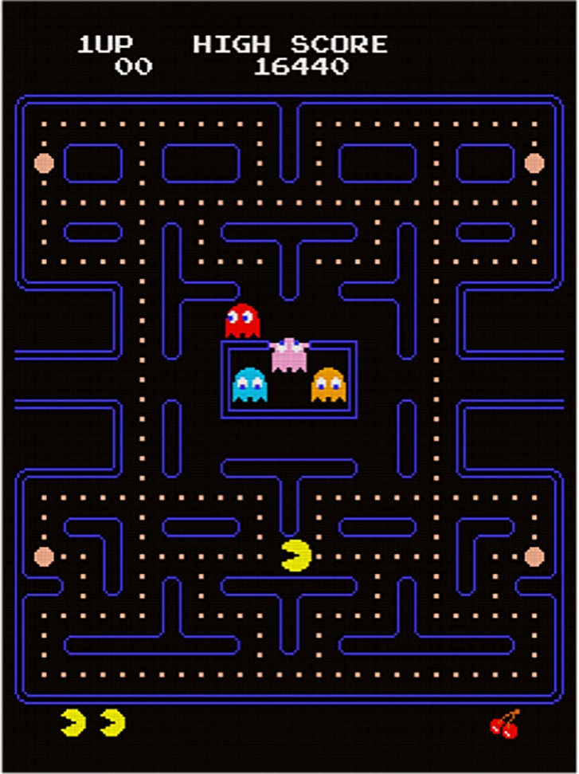

Pac-Man
Описание

Pac-Man — аркадная видеоигра, разработанная японской компанией Namco и вышедшая в 1980 году. Задача игрока — управляя Пакманом, съесть все точки в лабиринте, избегая встречи с привидениями, которые гоняются за героем. С повышением уровня игры изменяется только её сложность, архитектура лабиринта остаётся идентичной. Всего в игре 256 уровней, последний из которых невозможно завершить из-за ошибки переполнения.
В конце 1970-х из-за успеха игры Space Invaders рынок видеоигр сосредоточился на создании аркадных шутемапов и привлекал к себе сугубо мужскую аудиторию. Сотрудник Namco Тору Иватани хотел сделать игру, которая понравилась бы всем, в особенности девушкам, и в качестве основной темы своей работы выбрал еду. В Японии созданная игра получила название Puck-Man, но при локализации в США компания Midway изменила название на Pac-Man, считая, что при оригинальном названии дети могли бы закрасить середину буквы «P», превратив её в «F», и сделать слово обсценным.
После выхода в Японии игра была принята хорошо, но не стала популярной. В Америке же аудитория была впечатлена отсутствием в аркаде насильственного мотива, что привлекло в том числе женскую аудиторию и помогло заработать лояльность родителей к видеоигре. Всё это обеспечило популярность Pac-Man среди людей разных возрастов и профессий, породив повышенный интерес к игре и сделав Пакмана первой звездой видеоигр. Такой успех вдохновил разработчиков на создание более разнообразных игр, в том числе с отсутствием насилия.
Благодаря популярности игра портировалась и переиздавалась на множество платформ, среди которых особую известность получила версия Pac-Man для Atari 2600. Из-за своего плохого качества она стала одним из символов кризиса видеоигр 1983 года. Pac-Man дала начало одноимённой серии игр, в которой вышло множество продолжений на различных платформах, включая аркадные автоматы, домашние игровые системы, компьютеры и мобильные телефоны. Помимо этого, вышло множество клонов, подражаний и нелегальных копий игры.
Игровой процесс
Экран игры занимает собой лабиринт, коридоры которого заполнены точками. Задача игрока — управляя Пакманом, съесть все точки в лабиринте, избегая встречи с привидениями, которые гоняются за героем. В начале каждого уровня призраки находятся в недоступной Пакману прямоугольной комнате в середине уровня, из которой они со временем освобождаются. Если привидение дотронется до Пакмана, то его жизнь теряется, призраки и Пакман возвращаются на исходную позицию, но при этом прогресс собранных точек сохраняется. Если при столкновении с призраком у Пакмана не осталось дополнительных жизней, то игра заканчивается. После съедения всех точек начинается новый уровень в том же лабиринте. По бокам лабиринта находятся два входа в один туннель, при вхождении в который Пакман и призраки выходят с другой стороны лабиринта.
Всего в лабиринте находятся 240 маленьких точек и 4 большие, известные как энерджайзеры (англ. energizer). За съедение маленькой точки даётся 10 очков, а за съедение энерджайзера — 50. Таким образом, в общей сложности все точки в лабиринте стоят 2600 очков. При съедении Пакманом энерджайзера на ранних уровнях призраки в лабиринте на короткое время входят в режим испуга, резко меняют направление движения и перекрашиваются в синий цвет. За это время Пакман способен съесть призраков посредством столкновения с ними, которое безопасно. От съеденного привидения остаются только глаза, которые возвращаются в центр лабиринта, где призрак вновь оживает и отправляется в погоню за Пакманом. За съедение первого призрака после получения энерджайзера даётся 200 очков. За съедение каждого следующего привидения при эффекте того же энерджайзера даётся в два раза больше: 400, 800 и 1600 соответственно. Таким образом, при съедении всех призраков после каждого эффекта энерджайзера игрок может заработать за один уровень 12 000 очков. Однако с 19-го уровня призраки перестают быть синими и больше не могут быть съедены.
На каждом уровне в месте ниже зоны призраков дважды за раунд появляются бонусы, называемые фруктами. Первый фрукт появляется после съедения Пакманом 70 точек, второй — после съедения 170. За съедение бонуса даётся от 100 до 5000 очков в зависимости от того, какого уровня достиг игрок. Бонус находится на экране примерно 9 секунд, после чего исчезает. Фрукты, съеденные на текущем и на шести последних пройденных уровнях, отображаются под лабиринтом внизу экрана.
До 21-го уровня скорость Пакмана при обычном движении выше скорости призраков, но с 21-го призраки в режиме погони двигаются быстрее главного героя. Поедание точек замедляет Пакмана примерно на 10 % от его скорости, что позволяет призракам на всех уровнях догнать героя. После съедения энерджайзера, пока призраки напуганы, скорость Пакмана увеличивается, а движение призраков замедляется. С 5 по 20 уровень Пакман и без того двигается с максимальной скоростью, и при съедении энерджайзера он не становится быстрее. Когда призраки проходят через боковой туннель, то их скорость уменьшается почти наполовину.